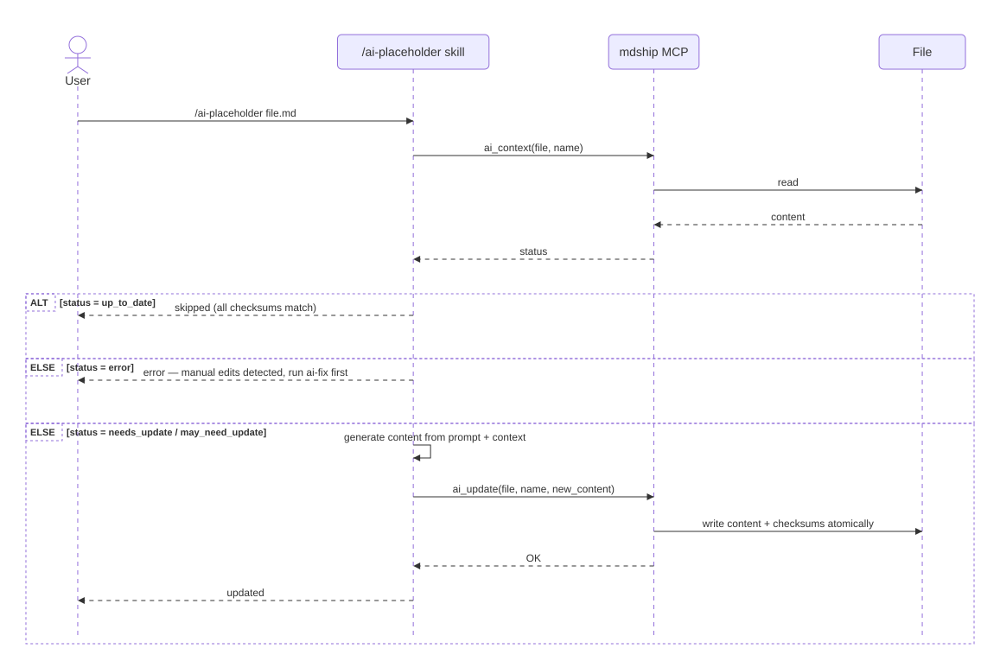

Content Integrity
The Two-M Problem: Managed and Manual Content in the Same File
Most macro-processing tools — Jamal, PET, m4, and similar preprocessors — maintain a strict separation between source and output. You write a template file; the tool reads it and writes a separate output file. The source is never touched. You edit the source, re-run the tool, and the output is fully regenerated. Conflicts between generated and hand-written content are impossible by construction because they live in different files.
mdship works differently. It is an in-place editor: it reads a markdown file, updates specific sections, and writes the result back to the same file. The rest of the document — everything outside the placeholder markers — is yours to write and edit freely. This is a deliberate design choice. It means you can mix generated content (a TOC, an included code snippet, a rendered diagram) with hand-written prose in the same document, commit a single file to git, and share it as-is.
The trade-off is real: managed sections and manual sections coexist in the same file. That is not a mistake; it is a compromise between the convenience of a single-file workflow and the safety of strict source/output separation.
The Risk: Editing Managed Content by Accident
When a placeholder like <!--TOC--> or <!--INCLUDE--> is updated by mdship, the content between the opening --> and the closing tag is entirely regenerated. Any edits made to that region since the last run will be silently overwritten.
This is easy to do by accident. A developer reads the TOC, notices a typo in a heading link, and fixes it inline. A reviewer edits an included code snippet for clarity. The next mdship update run discards those changes without warning.
A committed git history is the best safety net — git diff will show you what was lost, and git checkout can recover it. But not every edit ends up in a commit, and not every project uses git.
How mdship Tracks Managed Content
To guard against accidental overwrites, mdship records a content hash inside the opening marker every time it generates a managed block. The metadata key is _content_generated_.
After the first mdship update run, a TOC placeholder looks like this:
The value 312:md5:a3f1c8b2e94d7056... encodes two things:
312— the exact character count of the managed block (from the-->of the opening marker to the start of the closing tag).md5:...— the MD5 hex digest of that same block. MD5 is always used for this field; no other algorithm is supported.
On every subsequent run, before regenerating content, mdship:
- Uses the stored character count to locate the closing tag by position rather than by regex. This makes parsing resilient even when the generated content itself contains a string that looks like a closing marker.
- Verifies the MD5 hash of the current content. If it does not match the stored hash, the content has been edited since the last run, and mdship stops with an error.
The _content_generated_ line must be on its own line
The value is stored as a plain YAML scalar on a dedicated line. It would be syntactically valid to embed it inside a YAML flow mapping, but mdship requires it as a standalone line:
# Correct — standalone line:
_content_generated_: 312:md5:a3f1c8b2e94d7056...
# Not accepted — embedded in a mapping:
metadata: {_content_generated_: 312:md5:a3f1c8b2e94d7056...}
This requirement exists because mdship locates and updates the line with a simple string search, not a full YAML re-serialisation. Embedding it would require re-emitting the entire YAML structure, which would lose any comments and formatting you have added to the opening marker.
Three Scenarios
1First run — no hash present
_content_generated_ is absent from the opening marker. mdship generates the content, computes the character count and MD5, and inserts the _content_generated_ line plus two warning comments into the opening marker. The document is updated normally.
2Subsequent run — hash present and content unchanged
mdship locates the closing tag by position, verifies the hash, finds it matches, and regenerates the content. The _content_generated_ value is updated to reflect the new content. No user action required.
3Hash mismatch — content was edited manually
mdship detects that the closing tag is not at the expected position (the block length changed) or that the hash does not match (a same-length edit). It stops and prints one of the following errors:
ERROR: Placeholder TOC document integrity compromised.
Closing tag not found at expected position.
Delete _content_generated_ line to override and accept data loss.
ERROR: Placeholder TOC content was manually edited.
Hash mismatch detected.
Delete _content_generated_ line to override and accept data loss.
You have two ways to proceed.
Overriding the Hash Check
Manual override — delete the _content_generated_ line
Open the file and remove the _content_generated_ line (and optionally the two warning comment lines) from the opening marker. The next mdship update run treats the placeholder as new: it overwrites whatever is between the markers and inserts a fresh hash.
Use this when you have already decided to discard your manual edits, or when you have preserved them elsewhere and want a clean regeneration.
Command-line override — --force / -f
mdship update --force file.md
mdship update -f file.md
With --force, hash checks are skipped entirely. mdship still uses the stored character count to locate the closing tag when it is at the expected position — resilience against false closing markers is preserved in that case. If the closing tag is not at the expected position (the block length changed), mdship falls back to a regex scan, exactly as if there were no _content_generated_ at all. Either way, the content is regenerated and a new hash is written back.
When --force cannot help: if the managed content itself contains a string that matches the closing marker pattern (for example, an <!--INCLUDE--> block that pulled in a file mentioning <!--/INCLUDE-->), the regex fallback will stop at that false match. In this case, manually delete everything between the opening --> and the closing tag, leaving both markers intact and the _content_generated_ line removed, then run mdship update without --force.
Content Integrity for AI Placeholders
The <!--AI--> placeholder is different from TOC, INCLUDE, MERMAID, and TEMPLATE: its content is written by Claude, not by mdship update. mdship itself has no way to know when or what Claude wrote. Two dedicated commands handle integrity for AI placeholders.
mdship ai-fix
Records the current content hash for all AI placeholders in a file:
mdship ai-fix file.md # hash all AI placeholders
mdship ai-fix --name intro file.md # hash only the one named "intro"
Call this after writing or updating an AI placeholder section. It inserts the same _content_generated_ line and warning comments into the opening <!--AI--> marker that mdship update inserts into TOC/INCLUDE/MERMAID markers.
mdship ai-check
Verifies that each hashed AI placeholder still matches its recorded hash:
mdship ai-check file.md # check all AI placeholders
mdship ai-check --name intro file.md # check only the one named "intro"
Exits 0 if all hashed placeholders are intact. Exits 1 and prints errors for any that differ. Placeholders with no _content_generated_ entry are not checked — no hash means either the content was never recorded or the hash was deleted to allow a free update.
Workflow

The intended workflow when Claude updates an AI placeholder:
- Check — call
ai_contextto verify whether the content is up to date and detect any manual edits since the last write. If the response iserror, stop and report to the user before overwriting. - Generate — produce the new content.
- Write and fix atomically — call
ai_update, which replaces the content between the markers and writes all checksums (_content_generated_,_prompt_checksum_, per-depchecksum:) in a single file write.
This mirrors exactly what mdship update does for its own placeholders: check before overwriting, update the hash after.
How the /ai-placeholder skill enforces this
When you invoke the /ai-placeholder skill in Claude Code, the skill file instructs Claude to call mcp__mdship__ai_context via the mdship MCP server before writing anything. If the server returns an error status, Claude stops and reports the conflict to you rather than silently overwriting your edits. After generating, the skill instructs Claude to call mcp__mdship__ai_update via MCP, which writes the content and records all checksums atomically in a single file write — no separate ai_fix call is needed.
This means the check-generate-update cycle is not something Claude has to remember to do — it is encoded directly in the skill definition and enforced automatically on every /ai-placeholder invocation. The MCP calls are the machine-readable equivalent of the _content_generated_ guard that mdship update applies to its own placeholders.
See Also
The content integrity feature applies to all built-in placeholders that use a closing tag:
<!--TOC-->/<!--/TOC-->— table of contents<!--INCLUDE-->/<!--/INCLUDE-->— file inclusion<!--MERMAID-->/<!--/MERMAID-->— diagram rendering<!--TEMPLATE-->/<!--/TEMPLATE-->— variable-substituted template blocks<!--AI-->/<!--/AI-->— AI-generated content (managed viaai-fix/ai-check)
For TOC, INCLUDE, MERMAID, and TEMPLATE, the hash check and update are wired directly into each placeholder processor in the code. The feature is not applied automatically to new placeholder types — a new processor must call _check_content_hash before generating content and _apply_content_hash after. For AI placeholders, the same hash mechanism is used but triggered explicitly by the user via mdship ai-fix and mdship ai-check.
For TOC, INCLUDE, MERMAID, and TEMPLATE, the hash check and update are wired directly into each placeholder processor in the code. The feature is not applied automatically to new placeholder types — a new processor must call _check_content_hash before generating content and _apply_content_hash after. For AI placeholders, the same hash mechanism is used but triggered explicitly by the user via mdship ai-fix and mdship ai-check.